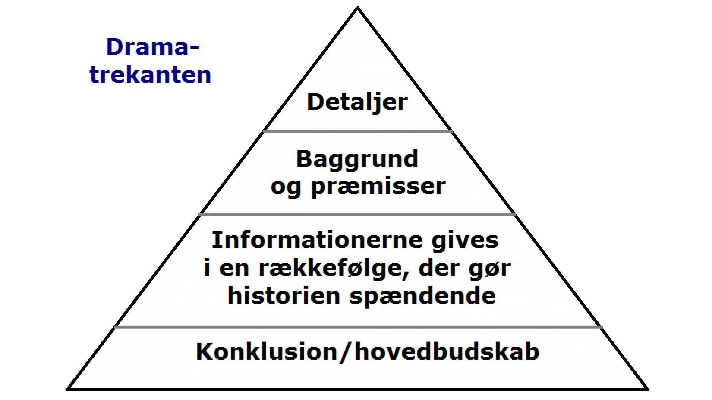
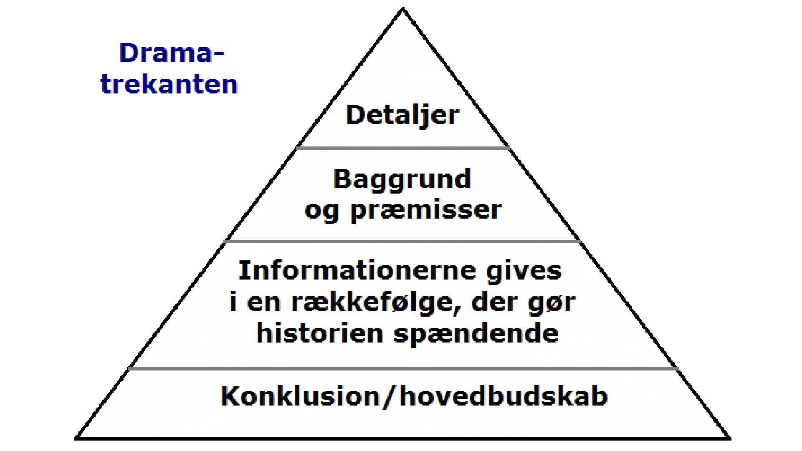

redesign og temadokumentation
05.03.01 redesign og temadokumentation
I denne opgave skulle vi redesigne en selvvalgt virksomheds website. Dette skulle munde ud i et kodet website og indeholde indholdsproduktion i form af tekst, foto og video. Vi kontaktede virksomheden Wild Orchid, hvilket er en skønhedsklinik på Frederiksberg ejet af 35-årige Julia.
Til billede-indholdet som skulle fremvirke på hjemmesiden fastlagde vi en fotostil, som var kendetegnet af et indbydende, lyst og inspirerende udtryk med lyserøde undertoner for at matche resten af hjemmesiden. Her var det vigtigt at alle billederne fulgte denne fotostil for at opnå et genkendeligt og ensartet udtryk.
Til video indholdet valgte vi at udarbejde en stemningsvideo som præsenteres på forsiden, for at give kunden et indblik i den rare og komfortable atmosfære de kan opleve hos Wild Orchid. Herudover lavede vi en interview-video, som vi placeres på en separat 'om os' side, hvor kunden fik mulighed for at høre om ejeren af virksomheden, samt beskrivelser af diverse behandlinger der tilbydes.
 
